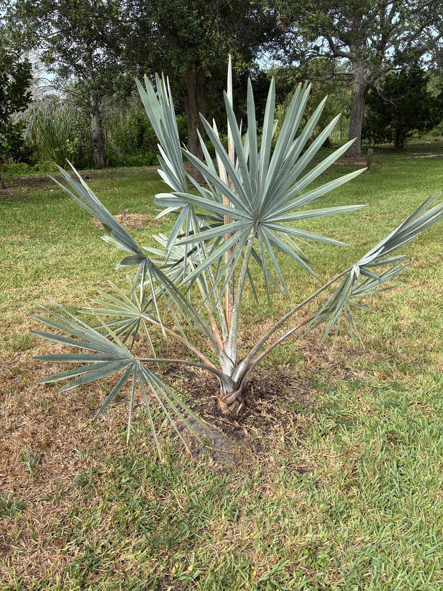

- Bismarckia nobilis is the only species in its genus — and its closest genus-level relative is Satranala decussilvae, the forest satrana, which is also found only in Madagascar. The two palms share an ancestor but split into opposite worlds: Bismarckia claimed the fire-prone dry savannas of the west, while Satranala retreated into the wet rainforests of the northeast.
- Satranala itself was only discovered and formally described in 1995.
- That spectacular silver-blue color is not a pigment. The palm secretes a heavy coat of epicuticular wax over every frond — wax that reflects harsh tropical UV rays, dramatically slows water loss, and gives the silver form measurably better cold tolerance than the rare green-leafed variety.
- It is, in effect, a built-in sunscreen and a reason the silver Bismarck handles a Florida cold snap better than its green sibling.
- In its native Madagascar, the Bismarck Palm is fire-adapted — it regularly survives controlled burns that clear the surrounding grass, and can be the only tree left standing across vast stretches of scorched savanna.
- Every Bismarck Palm is either male or female, and you cannot tell which until it flowers. Only females produce the olive-brown fruits, and only if a male is somewhere nearby.
Native exclusively to the open savannas and grasslands of western and northern Madagascar, where it grows on plains and plateaus from sea level to about 800 meters. It is the sole species in the genus Bismarckia — a monotypic genus found nowhere else on Earth.
Madagascar is home to roughly 170 species of native palms, 165 of which occur only on that island. The Bismarck Palm is one of the most abundant of them, dominating large stretches of the island's seasonally dry interior. It was formally described by botanists Hildebrandt and Wendland in 1881, the genus named in honor of German Chancellor Otto von Bismarck.
It arrived in Florida cultivation relatively recently and is now a well-established ornamental throughout the state, valued for its cold tolerance and architectural presence. UF/IFAS lists it as suitable for Florida landscapes in USDA Zones 9B through 11.
- The genus name honors Otto von Bismarck (1815–1898), first chancellor of the German Empire — and the naming was straightforwardly political. Hildebrandt and Wendland described the genus in 1881, at the height of European colonial ambition in East Africa.
- Bismarck never set foot in Madagascar, and Madagascar was never a German colony; the botanists simply chose to flatter the most powerful politician in Europe by attaching his name to the most imposing palm they had ever seen. The species epithet nobilis — Latin for 'noble' — completes the tribute.
- In its home range, the Bismarck Palm is remarkably fire-tolerant. The Madagascan savannas are regularly burned for agriculture, and Bismarckia — alongside Ravenala (the Traveler's Palm) — is often the only woody plant left standing afterward. That same toughness translates well to drought and heat stress in Florida landscapes.
- Locally in Madagascar, the palm is known as satrana and has long supplied practical materials: the trunk has been split and flattened for planks and partition walls, while leaves serve for roofing and basketry. It's a workhorse plant on its home island, not just a showpiece.
- The Bismarck Palm spends its first four to seven years as a stemless rosette close to the ground — a juvenile phase with no visible trunk at all. Once the trunk finally begins to develop, growth picks up and the palm steadily builds toward its mature stature.
In its native Madagascar the Bismarck Palm supports birds, insects, and small mammals with both fruit and shelter — it functions as a keystone tree in a landscape with few other large woody plants. In Florida cultivation, its wildlife value is more modest. The spring-to-early-summer inflorescences attract pollinating insects, and female trees produce olive-brown drupes that can be taken by birds.
Because it is a non-native palm with no co-evolutionary history with Florida's fauna, it does not function as a larval host for local butterflies or moths. Visitors looking for the park's best butterfly and pollinator habitat will find it among the native plantings.
Propagation is by seed only — no suckering or clonal spread. The palm is dioecious: male and female flowers are produced on separate individual trees. Only females fruit, and only if a male tree is present to provide pollen.
Dark brown, small, and not especially showy. Both male and female inflorescences are pendent and interfoliar — they emerge from between the leaf bases and can reach 4 to 6 feet in length. Flowering typically occurs in spring to early summer.
Female trees develop olive-brown, roughly spherical drupes about 1.5 inches in diameter, each containing a single seed. Fruits are not edible.
Costapalmate — meaning the frond has the circular shape of a fan palm but with a stiff central rib (the costa) that extends from the petiole into the blade, bowing the whole frond into a three-dimensional curve rather than a flat disc. This backbone gives the massive 4-foot-wide frond exceptional rigidity in high winds.
Fronds are deeply divided into 20 or more stiff segments and are typically silver-blue from a heavy coating of epicuticular wax; a rarer variety is light olive-green. Petioles are 6 to 9 feet long and carry small marginal teeth.
Solitary, gray to tan, and slightly bulging at the base. Persistent split leaf bases clad the upper trunk; lower down, these eventually fall and leave clean ringed scars. Trunk diameter at maturity is roughly 15 to 18 inches.
The crown is the first thing to notice — a nearly spherical head of stiff silver-blue fans sitting atop a clean, ring-scarred trunk. Look at the upper trunk for the split, boot-like leaf bases still clinging where old fronds attached; below them the trunk clears out and shows its ringed texture. If the palm is in bloom, look for long drooping flower stalks emerging from between the leaf bases.
And if you find fruit, you're looking at a female tree.
The petioles carry small marginal teeth that can scratch or cut — worth keeping in mind when working close to the fronds. The fruit is not edible and not a food source, but it is not toxic. No known toxicity to people, dogs, or cats.
UF/IFAS notes that the bold texture and eventual great height of this species can be overpowering in small residential landscapes — at Palma Sola Botanical Park it has room to become the specimen it wants to be.
A green-leafed variety of Bismarckia nobilis exists and is less cold-hardy than the common silver-blue form; the silver-blue variety tolerates temperatures down to roughly 25 to 28 degrees F.


- © Randall Carter (CC-BY-NC), via iNaturalist